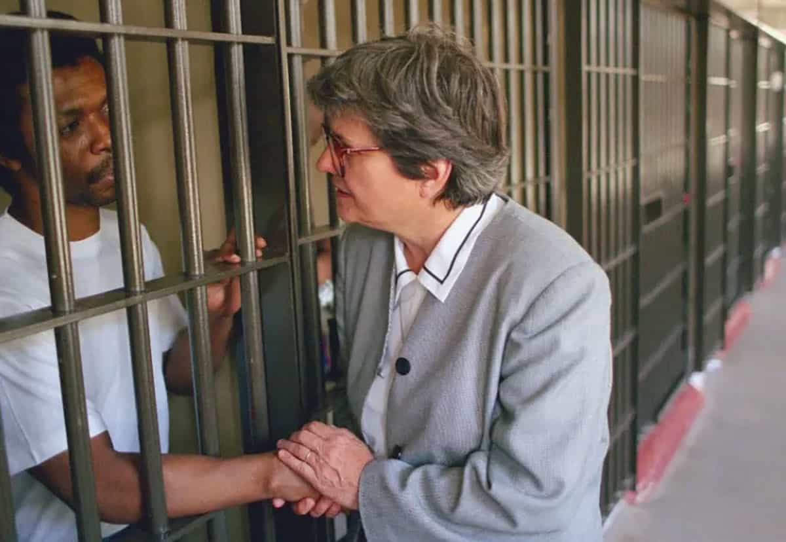

2026.07.11
헬렌 프레진
Helen Prejean
사형수의 마지막 방과 피해자 가족의 빈 의자, 44년간 그 사이를 오간 사람의 기록.
프롤로그
1984년 4월 5일 새벽, 루이지애나주 앙골라 교도소. 한 남자가 전기의자로 걸어간다. 몇 시간 전, 그는 자신의 곁을 지켜온 수녀에게 이렇게 말했다. “당신이 제가 볼 마지막 얼굴이었으면 좋겠습니다. 사랑의 얼굴요.” 여자는 그의 손을 놓지 않았다. 그의 이름은 패트릭 소니어, 여자의 이름은 헬렌 프레진이었다.
이후 40여 년, 그녀는 미국에서 사형 집행 현장에 가장 자주 다녀온 민간인 중 한 명이 되었다. 여섯 번, 그녀는 자신이 편지를 쓰고 손을 잡아준 사람이 죽는 것을 지켜보았다. 그녀가 쓴 책은 오스카상을 받은 영화가 되었고, 오페라가 되었고, 그래픽 노블이 되었다. 그러나 이 이야기의 핵심은 극장의 스포트라이트가 아니라, 매달 한 번씩 앙골라로 향하는 고속도로 위, 조용히 되풀이된 그 방문들에 있다.

이것은 회심의 기록이다. 다만 극적인 계시나 한순간의 깨달음이 아니라, 안락한 신앙이 서서히, 불편하게, 되돌릴 수 없이 다른 무언가로 바뀌어간 기록이다.
배턴루지의 소녀
1939년 4월 21일, 루이지애나주 배턴루지. 변호사 아버지와 간호사 어머니, 케이준 혈통의 독실한 가톨릭 가정에서 헬렌 프레진이 태어났다. 세 남매 중 둘째였다. 사제와 수녀가 스스럼없이 드나드는 집, 문학을 좋아하는 아버지, 자상한 어머니. 훗날 그녀는 이 시절을 행복했다고 기억한다. 그 기억에는 거짓이 없다.
다만 그 집에는 흑인 가사도우미들도 있었다. 그들은 같은 화장실을 쓸 수 없었다. 같은 식탁에 앉을 수 없었다. 어린 헬렌에게 그것은 질문할 필요조차 없는, 세상이 원래 그렇게 생긴 방식이었다.
1952년, 열두 살. 배턴루지의 버스 안에서 그녀는 한 흑인 여성이 운전사에게 발길질을 당해 인도에 나동그라지는 것을 보았다. 아무도 멈추지 않았다. 그 장면은 설명되지 않은 채, 소화되지 않은 채 그녀 안에 오래 남았다.
1957년, 성 요셉 아카데미를 졸업한 열여덟 살의 헬렌은 그해 곧바로 메다이유의 성 요셉 수녀회에 입회했다. 결정은 빨랐다. 그것을 이해하는 데는 시간이 훨씬 더 오래 걸렸다.
교실 안의 25년
이후의 이야기는 표면적으로는 평범하다. 뉴올리언스의 세인트 메리스 도미니칸 대학에서 영문학과 교육학을 공부하고, 여러 가톨릭 학교에서 오랫동안 교사로 일하고, 오타와의 세인트 폴 대학교에서 종교교육학 석사를 받고, 본당 종교교육 담당자로, 수녀회 양성 담당자로 일한다. 25년 가까운 세월이 이렇게 흘러간다. 조용히, 성실하게, 별다른 사건 없이.
그러다 교회 전체가 흔들린다. 1962년부터 1965년까지 열린 제2차 바티칸 공의회는 가톨릭교회에게 세상 밖이 아니라 세상 안으로, 가난한 이들 곁으로 가라고 요구했다. 1967년, 헬렌이 속한 수녀회도 이 흐름을 따라 사명을 다시 썼다. 자선에서 정의로.
그녀는 그 전환을 이렇게 요약한 적이 있다. 고통받는 세상을 위해 그저 기도만 하던 수녀에서, 소매를 걷어붙이고 내 기도를 직접 살아내는 여성으로 바뀌었다고. 이 한 문장 뒤에는 십수 년의 망설임이 숨어 있다.
1981년, 마흔두 살의 헬렌은 뉴올리언스에서 가장 가난한 흑인 저소득층 주택단지, 세인트 토마스로 거처를 옮겼다. 그녀는 그곳에서 호프 하우스라는 공동체 단체를 세운다. 교사가 활동가로 바뀌는 순간이었지만, 아직 그녀는 자신이 사형 제도와 마주하게 되리라는 것을 몰랐다.
편지 한 통
1982년, 지인이 부탁 하나를 건넨다. 앙골라 교도소 사형수 감방에 있는 남자에게 편지를 써 달라는 것. 이름은 엘모 패트릭 소니어. 1977년, 그는 남동생 에디와 함께 연인들이 즐겨 찾는 외딴 길에서 10대 커플 데이비드 르블랑과 로레타 부르크를 납치해 살해했다. 사형을 선고받은 것은 형 쪽이었다.
헬렌은 별생각 없이 몇 통을 썼다. 답장이 왔다. 죄명이 아니라 이름이 적힌 답장이었다. 훗날 그녀는 이 시작을 짧게 회상한다. 그가 답장을 보냈고, 거기에는 이름이 있었다고. 편지를 주고받으며 그녀는 또 하나를 알게 되었다. 그를 찾아오는 사람이 아무도 없었다.
편지는 관계가 되었다. 1982년 9월 15일, 그녀는 처음으로 앙골라를 직접 찾아가 그를 마주했다. 이날 이후 그녀는 공식적으로 그의 영적 지도자가 된다. 그녀는 그의 항소를 도우려 애썼다. 실패했다.
1984년 4월 5일. 헬렌은 소니어가 전기의자에서 죽는 것을 처음으로 지켜본다. 이후 그녀는 그들을 혼자 죽어가게 둘 수 없었기 때문이라고 말하게 된다. 이것이 이유의 전부였다. 그녀는 사형을 앞둔 이들에게 성경을 읽어주었고, 밤마다 교도관의 발소리를 두려워하는 그들 옆에 앉아 있었다. 그녀는 처형이 왜 그토록 철저히 비공개로, 새벽에, 소수의 목격자 앞에서만 이뤄지는지를 곱씹었다. 은폐야말로 이 제도가 살아남는 방식이라고, 그녀는 결론 내렸다.
피해자의 부모, 부르크 가족과 르블랑 가족은 그녀를 책망했다. 왜 우리에게는 오지 않았느냐고. 헬렌은 그 질문을 피하지 않았다. 그녀는 사형수의 외로움은 보았지만, 살해된 아이들이 남긴 빈자리 곁에는 서지 않았다는 것을 인정했다. 그녀의 윤리는 처음부터 완성되어 있지 않았다. 지적받을 때마다, 그 반경은 다시 넓어졌다.
같은 시기 그녀는 살인 피해자 유가족들에게도 다가갔다. 1987년, 그녀는 서바이브를 세운다. 사형이라는 응답 없이도 서로의 슬픔을 함께 견딜 수 있는 자리. 그녀는 훗날 이것을 자신이 남긴 가장 뜻깊은 일로 꼽는다. 자식을 잃은 부모의 자리를 그녀는 식탁 위의 빈 의자라고 불렀다. 무엇으로도 채울 수 없는 자리.
그 뒤 수십 년, 그녀는 로버트 리 윌리, 도비 길리스 윌리엄스, 조셉 오델을 포함해 모두 여섯 사람의 마지막 순간을 지켰다.
책 한 권이 던진 파문
일기 쓰는 습관이 오래된 사람이었다. 그 기록은 1993년 『데드 맨 워킹: 미국 사형 제도에 대한 목격담』이 된다.
책이 나올 당시, 미국의 사형제 지지 여론은 80퍼센트를 넘었다. 그녀의 고향 루이지애나에서는 거의 90퍼센트에 달했다. 그 벽 앞에서 책은 『뉴욕타임스』 베스트셀러 목록에 31주간 올랐고, 10여 개 언어로 번역되었고, 퓰리처상 후보에 올랐다.
1995년, 배우 수전 서랜던과 그녀의 파트너 팀 로빈스가 이 이야기에 붙들렸다. 로빈스가 각본을 쓰고 연출했다. 소니어와 윌리, 두 사람의 삶은 숀 펜이 연기한 한 명의 인물로 압축되었다. 서랜던은 이 역할로 아카데미 여우주연상을 받았다. 2000년에는 오페라로, 이후 연극으로, 2026년에는 그래픽 노블로 이 이야기는 계속 다시 태어난다. 형식은 바뀌었지만 질문은 그대로다. 국가가 사람을 죽이는 순간, 그 방을 지켜보는 사람은 무엇을 보게 되는가.
강단에서 의회로
책이 그녀에게 준 것은 유명세만이 아니라 발언권이었다. 1985년부터 전미사형제도폐지연합 이사로, 1993년부터 1995년까지는 의장으로 활동했다. 1999년에는 모라토리엄 2000 청원 운동을 시작해 이를 전국 단위의 교육 캠페인으로 키웠다.
그녀의 논거는 감정만이 아니라 숫자였다. 흉악 범죄로 인한 사망 확률, 사형이 실제로 선고되는 범죄의 비율, 길고 복잡한 항소 절차 때문에 사형 판결을 유지하는 데 드는 비용. 그녀는 늘 이렇게 되물었다. 그렇다면 우리가 정말 원하는 것은 무엇인가. 안전인가, 처벌인가.
무고한 죽음들
처음 편지를 쓰기 시작했을 때, 헬렌은 사형수는 모두 유죄일 것이라 생각했다. 그녀 스스로 그렇게 인정한다. 20여 년이 지난 뒤, 그녀는 다른 것을 알게 되었다. 부실한 변호 하나, 법정에서 다뤄지지 않은 증거 하나만으로도 무고한 사람이 사형대에 오를 수 있다는 것.
2004년, 두 번째 책 『데드 오브 이노슨츠』는 그녀가 직접 처형을 지켜본 두 사람, 도비 길리스 윌리엄스와 조셉 오델의 이야기를 다룬다. 그녀는 이 둘이 무죄였다고 믿는다. 이 책이 던지는 질문은 사형이 옳은가 그른가를 넘어선다. 지금의 사법 체계가 이토록 결함투성이라면, 그 위에서 내려지는 어떤 사형 판결이 정당할 수 있는가. 그녀는 한 줄로 정리한다. 사형 제도는 가난한 사람들의 문제라고.
교리서 한 줄을 바꾼 시간
그녀는 세속 정치에만 머물지 않았다. 수십 년에 걸쳐 요한 바오로 2세와 프란치스코, 두 교황을 직접 만나 사형제에 대한 교회의 입장을 예외 없는 반대로 바꿔달라고 설득했다. 2016년 1월, 그녀는 프란치스코 교황에게 사형수 리처드 글로시프가 쓴 편지를 직접 전했다.
2018년 8월, 그녀와의 만남 뒤 프란치스코 교황은 가톨릭 교리서를 새로 고쳐 썼다. 사형제는 인간의 존엄성에 대한 공격이며, 어떤 예외도 없다는 방향이었다. 한 문장이 바뀌는 데 헬렌의 인생 절반이 들어갔다.
불의 강
2019년, 세 번째 책 『리버 오브 파이어: 나의 영적 여정』이 나왔다. 이 책은 그녀가 순종적인 전통 수녀에서 사회정의 활동가로 변모해간 더 오래되고 더 조용한 싸움을 드러낸다. 사형수의 손을 잡기 훨씬 이전부터 진행되고 있던 싸움이다.
이때까지 그녀는 100개가 넘는 상을 받았다. 1996년 노트르담 대학교의 레타레 메달, 1998년 파쳄 인 테리스상, 구겐하임 펠로우십, ACLU 얼 워런 시민자유상, 여러 차례의 노벨평화상 후보 지명. 2010년 그녀는 40여 년치 일기와 편지, 강연 원고를 시카고 드폴 대학교에 통째로 기증했다. 이후 매년, 그녀는 자신의 생일 무렵 그곳을 찾는다.
여든일곱
오클라호마의 리처드 글로시프. 1997년 살인 사건의 주범으로 지목되어 사형을 선고받았지만 줄곧 결백을 주장했고, 아홉 차례나 처형 직전까지 갔다가 그때마다 집행이 미뤄졌다. 2015년 초, 그는 헬렌에게 직접 전화를 걸었다. 허락도 없이 당신을 제 곁에 있을 사람으로 적어두었다고. 이렇게 관계가 시작됐다.
2025년, 미국 연방대법원은 그의 유죄 판결을 뒤집고 새 재판을 명했다. 2026년 5월 14일, 글로시프는 보석으로 풀려나 새 재판을 기다리게 되었다. 오클라호마주는 그를 재기소하되 사형은 다시 구형하지 않겠다고 밝혔다. 그러나 피해자 배리 밴트리스의 가족은 기존 유죄 판결이 유지되기를 바란다고 말했다. 결백에 대한 확신과 유가족의 고통이, 다시 한번 같은 자리에 나란히 놓였다.
2026년 4월, 그녀는 여든일곱 번째 생일을 드폴 대학교에서 맞았다. 일리노이주 사형제 폐지 15주년을 기념하는 자리였다. 레오 14세 교황이 사형제에 반대하는 영상 메시지를 보내온 바로 그날, 미국 법무부는 총살형과 전기의자, 가스실까지 연방 처형 수단으로 되살리겠다는 방향을 밝혔다. 같은 시간, 다른 방향을 가리키는 두 개의 목소리. 그녀는 그것을 담담히 지켜보았다. 놀라지 않았다고, 그녀는 말했다.
그녀가 남긴 것
헬렌 프레진이 평생 붙든 문장은 하나다. 어떤 인간도 자신이 저지른 가장 끔찍한 행위 하나로 완전히 규정되지는 않는다. 그녀는 그들의 죄를 변호하지 않았다. 그 죄의 무게를 줄이려 하지도 않았다. 그녀는 살해당한 이들의 가족이 안고 사는, 결코 채워지지 않는 자리를 누구보다 가까이서 지켜본 사람이었다. 그녀가 묻고 또 물었던 것은 단 하나다. 국가가 사람을 죽이는 것으로 그 빈자리에 응답하는 방식이, 정말 정의인가.
그녀는 아니라고 답했다. 그리고 그 대답을 논문이 아니라, 40년 넘게 매달 한 번씩 앙골라로 향한 고속도로 위에서, 여섯 번의 손을 놓지 않은 순간들 속에서 살아냈다.
법학자와 인권 활동가들은 그녀가 통계와 정책 논쟁에 불과했던 사형 제도에 얼굴을 하나씩 붙여 넣었다고 말한다. 재소자와 피해자 가족 사이의 간극을 메운 데 그녀의 진짜 영향력이 있다는 평가도 있다. 재소자든, 유가족이든, 교도관이든, 배심원이든, 이 제도에 얽힌 모든 사람의 인간성을 있는 그대로 드러낸 것.
변호사 브라이언 스티븐슨이 법정에서 사건 번호 뒤에 가려진 이름을 되찾아주는 일을 해왔다면, 헬렌 프레진은 죽음이 예정된 방에서 마지막까지 그 얼굴을 바라보는 일을 해왔다. 두 사람이 공유하는 것은 무책임한 용서가 아니다. 책임을 묻는 일과, 한 사람을 죄명 하나 속에 영원히 가두는 일은 다르다는 구별이다. 행위는 정확한 이름으로 불러야 한다. 피해자는 지워지지 않아야 한다. 그러나 그 무엇도, 한 사람의 전체를 그가 저지른 최악의 순간과 같은 것으로 만들지는 못한다.
그녀는 지금도 뉴올리언스에서 사역을 이어가고 있다. 여든일곱의 나이에도 사형수와 편지를 주고받고, 강연을 다니고, 인터뷰에 응한다. 1982년 어느 날, 이름도 몰랐던 사형수에게 편지를 쓰기 시작한 한 여자는, 반세기 가까이 지난 지금도 같은 질문 앞에 서 있다. 그리고 여전히, 그 질문에서 등을 돌리지 않았다.
한국어 번역서에 관하여
확인한 범위에서는 헬렌 프레진의 『Dead Man Walking』, 『The Death of Innocents』, 『River of Fire』 세 권 모두 국내 정식 한국어 번역본을 찾지 못했다. 원서와 영화, 공식 인터뷰·강연 자료를 함께 보는 편이 현재로서는 가장 정확하다.
더 읽을 자료
- 헬렌 프레진 공식 전기
출생, 사형수 사목, 『Dead Man Walking』, 교황청 교리 변화와 현재 활동을 한눈에 볼 수 있다. - 헬렌 프레진의 책들
『Dead Man Walking』, 『The Death of Innocents』, 『River of Fire』와 그래픽 에디션 정보를 모은 공식 페이지다. - The New Yorker, 「Dead Man Walking」 다시 읽기
이 글에 사용한 사진의 출처이며, 프레진의 책이 미국 사형제 논쟁에 남긴 의미를 살핀다. - AP, 리처드 글로시프 보석 석방 보도
2026년 글로시프 사건의 최신 흐름과 재판 상황을 확인할 수 있다. - The Washington Post, 연방 사형 집행 방식 확대 보도
2026년 미국 법무부의 사형 집행 방식 확대 움직임을 다룬 기사다.